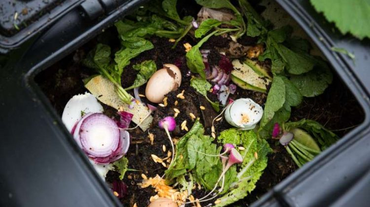

Spinach: Click HERE for nutrition information and recipes

Providing Resources and Information to Help Fight Malnutrition in Low-Income Families
MalNu Fighter is a place where low income individuals can come to obtain general information about the health consequences and causes of malnutrition.
In addition, we provide resources on to reduce your chances of suffering from malnutrition, specifically related to Undernutrition and Micronutrient-related malnutrition.
What is Malnutrition?
Malnutrition is the condition that develops when the body is deprived of vitamins, minerals and other nutrients it needs to maintain healthy tissues and organ function. The term malnutrition addresses three broad groups of conditions:
- Undernutrition, which includes stunting (low height-for-age) and underweight (low weight-for-height)
- Overweight, obesity and diet-related noncommunicable diseases (heart disease, stroke, diabetes)
- Micronutrient-related malnutrition, which includes micronutrient deficiencies (a lack of important vitamins and minerals) or micronutrient excess
Malnutrition in America
When people think about malnutrition, they typically think of impoverished nations and third world countries, but the reality is, we only need to look in our own backyard. Today, approximately 40 million Americans and 12 million children are food insecure, meaning they are often forced to skip meals and buy cheap non-nutritious food. Many families suffering from hunger and poverty live in areas where fresh, unprocessed healthy food is not available or is expensive
For Additional Information on Malnutrition:
Centers for Disease Control and PreventionMalnutrition in America
Urban Gardening
Growing your own produce does not require a large yard!

Learn how to quickly and easily Start Your Urban Garden Today!
Produce Shopping for Nutrition
Not all produce is created equal.
To get the most bang for your buck and for your health,
MalNu Fighter
has identified the most nutrient rich produce and
how you can incorporate it into your diet today!
1 / 3

2 / 3
Carrots: Click HERE for nutrition information and recipes
3 / 3
Broccoli: Click HERE for nutrition information and recipes
Composting 101

Start an Indoor Compost Today!
Compost is the very best substrate for growing vegetables.
It is much better
than topsoil or potting soil and best of all, it's FREE!
Community Message Board
See what our community is saying about malnutrition, urban gardening and composting on our Community Message Board or make your first post below.
Contact MalNu Fighter
Havew a question? Click HERE to contact us.